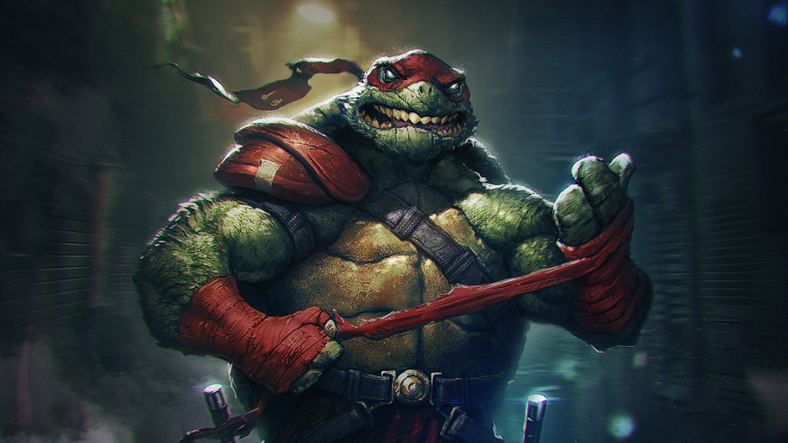

About Raphael
Raphael, nickname Raph, is a fictional superhero and one of the four main characters of the Teenage Mutant Ninja Turtles comics and all related media.
Pissed off Raphael
Characteristics
- Angry & Hot Headed
- Confident
- Really good at hand to hand combat
Raphael and his Brothers
Raphael has three brothers. They are Leonardo, Michelangelo and Donatello. Leonardo wears the blue mask, wields two katanas, and is the responsible leader of the group. Click on the links below to read more about them: